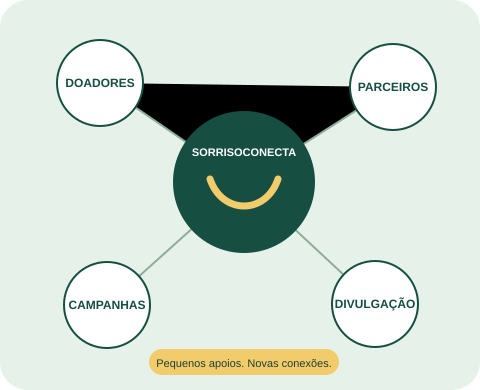

SorrisoConecta
SorrisoConectaConhecer o apoio
Registrar a cidade, o programa de interesse e a forma de contribuição, com autorização de contato.
Captação que começa com uma conexão
Dinheiro, materiais ou divulgação: cada pessoa tem um jeito de contribuir. O SorrisoConecta aproxima esses apoios das campanhas da Turma do Bem.

O desafio
Nossa proposta reúne interesses, campanhas e histórico de contatos para que a equipe saiba a quem procurar e qual conversa retomar.
Registrar a cidade, o programa de interesse e a forma de contribuição, com autorização de contato.
Relacionar o apoiador a uma campanha local compatível com sua disponibilidade.
Acompanhar conversas, agradecer a participação e compartilhar resultados agregados.